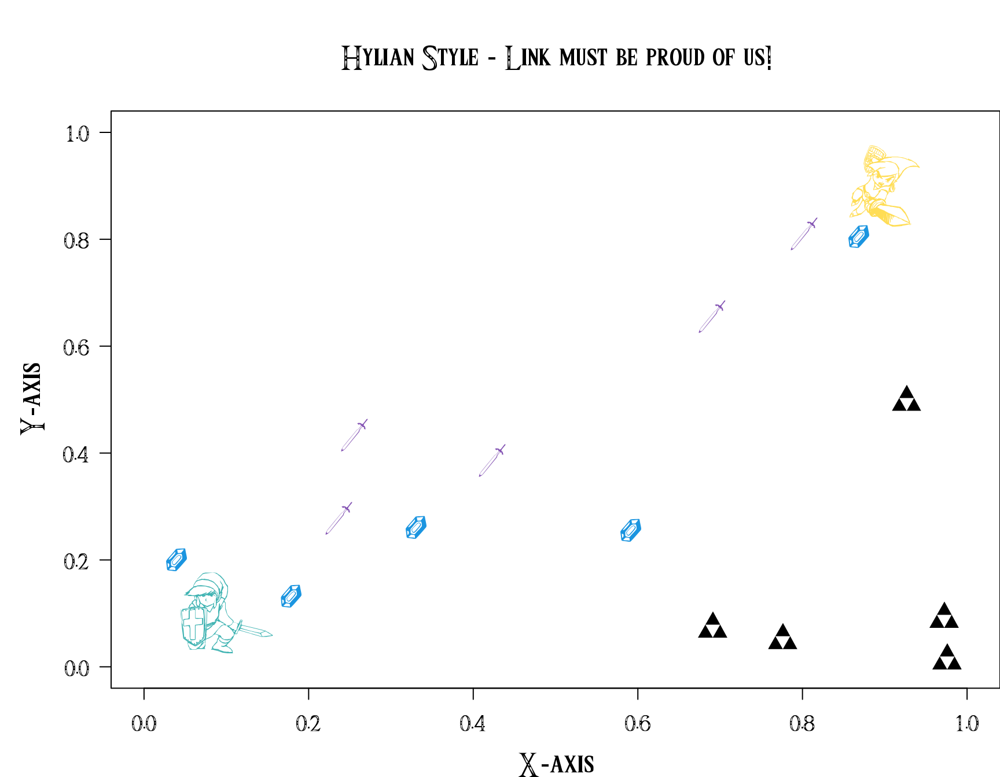

Below are presented the 5 steps you need to make your plot a Hylian one! May the triforce be with you!
Open R and download the font
The Triforce font is available on line.
Below we download it using R. Alternatively, you may simply download and install
it using a couple of clicks, if you proceed so, skip step 1.
1
2
3
4
5
6
7
8
9
10
|
# Download Triforce font < Triforce.ttf >
url <- "http://zeldauniverse.net/wp-content/uploads/2014/01/Triforce.ttf_.zip"
download.file(url, destfile = basename(url))
# Unzip the file
unzip(basename(url))
# Remove .zip
file.remove(basename(url))
#R> [1] TRUE
|
Install the showtext package
1
|
install.packages("showtext")
|
Look at the list of fonts available locally
1
2
3
4
5
6
7
8
9
10
11
12
13
14
15
16
17
18
19
20
21
22
|
library(showtext)
showtext_auto()
font_files()
#R> path file
#R> 1 /home/kevcaz/.local/share/fonts 3270Medium.ttf
#R> 2 /home/kevcaz/.local/share/fonts 3270Narrow.ttf
#R> 3 /home/kevcaz/.local/share/fonts 3270SemiNarrow.ttf
#R> 4 /home/kevcaz/.local/share/fonts Anonymice Powerline Bold Italic.ttf
#R> 5 /home/kevcaz/.local/share/fonts Anonymice Powerline Bold.ttf
#R> family face version
#R> 1 IBM 3270 Medium Version 001.000
#R> 2 IBM 3270 Narrow Medium Version 001.000
#R> 3 IBM 3270 Semi-Narrow Medium Version 001.000
#R> 4 Anonymice Powerline Bold Italic Version 1.002
#R> 5 Anonymice Powerline Bold Version 1.002
#R> ps_name
#R> 1 3270Medium
#R> 2 3270Narrow
#R> 3 3270SemiNarrow
#R> 4 AnonymicePowerline-BoldItalic
#R> 5 AnonymicePowerline-Bold
#R> [ reached 'max' / getOption("max.print") -- omitted 2881 rows ]
|
If you have installed the font on your computer, it should be in the list,
then you can skip step 4.
Add a path to your font
If you have downloaded the font using R, you must notify showtext about to
folder dr where the font has been stored. To so do, use the font_paths()
function:
1
2
3
4
5
6
|
font_paths(".")
#R> [1] "/home/kevcaz/Github/Websites/inSileco.github.io/content/post/archived/hylianStyle"
#R> [2] "/home/kevcaz/.local/share/fonts"
#R> [3] "/usr/local/share/fonts"
...
#R> [145] "/usr/share/fonts/X11/util"
|
Add the Triforce font to your session:
Either way, the Triforce font should now be available
1
2
3
4
5
6
7
8
9
10
11
12
13
14
15
16
17
18
19
20
21
22
23
24
25
26
27
28
29
30
|
# Is the TTF present?
font_files()[grep("Triforce", font_files())]
#R> file
#R> 1 3270Medium.ttf
#R> 2 3270Narrow.ttf
#R> 3 3270SemiNarrow.ttf
#R> 4 Anonymice Powerline Bold Italic.ttf
#R> 5 Anonymice Powerline Bold.ttf
#R> 6 Anonymice Powerline Italic.ttf
...
#R> 500 ae_Granada.ttf
#R> family face
#R> 1 IBM 3270 Medium
#R> 2 IBM 3270 Narrow Medium
#R> 3 IBM 3270 Semi-Narrow Medium
#R> 4 Anonymice Powerline Bold Italic
#R> 5 Anonymice Powerline Bold
#R> 6 Anonymice Powerline Italic
...
#R> 500 Granada Regular
#R> ps_name
#R> 1 3270Medium
#R> 2 3270Narrow
#R> 3 3270SemiNarrow
#R> 4 AnonymicePowerline-BoldItalic
#R> 5 AnonymicePowerline-Bold
#R> 6 AnonymicePowerline-Italic
...
#R> 500 Granada
#R> [ reached 'max' / getOption("max.print") -- omitted 2387 rows ]
|
Let’s add it to our session:
1
2
3
4
|
font_add(family = 'Triforce', regular = 'Triforce.ttf')
font_families()
#R> [1] "sans" "serif" "mono" "wqy-microhei"
#R> [5] "Triforce"
|
Finally, let’s make our Hylian plot!
1
2
3
4
5
6
7
8
9
10
11
|
showtext_begin()
par(family = "Triforce", las = 1, cex.lab = 3, cex.main = 3, cex.axis=2, mar = c(4, 5, 5, 0))
plot(x = c(0, 1), y = c(0, 1), type = "n", xlab = "X-axis", ylab = "Y-axis")
title(main = "Hylian Style - Link must be proud of us!")
##-- triforce symbols / rubies / swords
points(x = runif(5), y = runif(5), pch = "*", cex = 4)
points(x = runif(5), y = runif(5), pch = "$", cex = 4, col = "#1b95e0")
points(x = runif(5), y = runif(5), pch = "@", cex = 4, col = "#8555b4")
##-- big Links
points(x = 0.1, y = 0.1, pch = "%", cex = 10, col = "#3fb3b2", lwd=2)
points(x = 0.9, y = 0.9, pch = "^", cex = 10, col = "#ffdd55", lwd=2)
|

Session info
1
2
3
4
5
6
7
8
9
10
11
12
13
14
15
16
17
18
19
20
21
22
23
24
25
26
27
28
29
30
31
32
33
34
35
36
37
|
sessionInfo()
#R> R version 3.5.2 (2018-12-20)
#R> Platform: x86_64-pc-linux-gnu (64-bit)
#R> Running under: Debian GNU/Linux buster/sid
#R>
#R> Matrix products: default
#R> BLAS: /usr/lib/x86_64-linux-gnu/openblas/libblas.so.3
#R> LAPACK: /usr/lib/x86_64-linux-gnu/libopenblasp-r0.3.5.so
#R>
#R> locale:
#R> [1] LC_CTYPE=en_US.UTF-8 LC_NUMERIC=C
#R> [3] LC_TIME=en_US.UTF-8 LC_COLLATE=en_US.UTF-8
#R> [5] LC_MONETARY=en_US.UTF-8 LC_MESSAGES=en_US.UTF-8
#R> [7] LC_PAPER=en_US.UTF-8 LC_NAME=C
#R> [9] LC_ADDRESS=C LC_TELEPHONE=C
#R> [11] LC_MEASUREMENT=en_US.UTF-8 LC_IDENTIFICATION=C
#R>
#R> attached base packages:
#R> [1] stats graphics grDevices datasets utils methods base
#R>
#R> other attached packages:
#R> [1] showtext_0.6 showtextdb_2.0 sysfonts_0.8 usethis_1.4.0
#R> [5] devtools_2.0.2
#R>
#R> loaded via a namespace (and not attached):
#R> [1] Rcpp_1.0.0 knitr_1.22 magrittr_1.5
#R> [4] pkgload_1.0.2 R6_2.4.0 rlang_0.3.1
#R> [7] stringr_1.4.0 tools_3.5.2 pkgbuild_1.0.2
#R> [10] xfun_0.5 sessioninfo_1.1.1 cli_1.0.1
#R> [13] withr_2.1.2 htmltools_0.3.6 remotes_2.0.2
#R> [16] yaml_2.2.0 assertthat_0.2.0 rprojroot_1.3-2
#R> [19] digest_0.6.18 bookdown_0.9.2 crayon_1.3.4
#R> [22] processx_3.2.1 callr_3.1.1 fs_1.2.6
#R> [25] ps_1.3.0 testthat_2.0.1 memoise_1.1.0
#R> [28] glue_1.3.0 evaluate_0.13 rmarkdown_1.12
#R> [31] blogdown_0.11 stringi_1.4.3 compiler_3.5.2
#R> [34] desc_1.2.0 backports_1.1.3 prettyunits_1.0.2
|
Edits
Nov 11, 2017 -- Paths to font files fave been changed.
Mar 18, 2020 -- Simplify the downloading of the font.
Apr 23, 2022 -- Add 'archived' badge.
Feb 4, 2023 -- Headers are no longer numbered.

 showtext
utils
graphics
showtext
utils
graphics
![](https://img.shields.io/static/v1?style=flat&label=reading%20time&message=8min&color=3fb3b2&logo=)